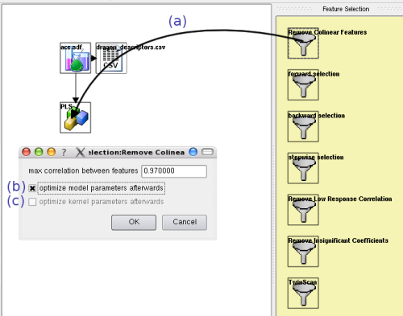
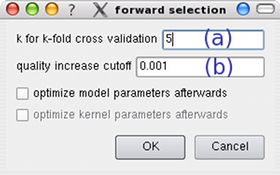
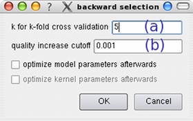
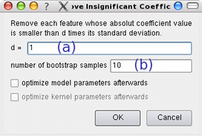
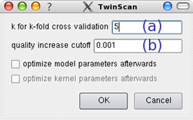

Index
Index

Feature Selections
|  | In order to create a new feature selection, just drag its item from the feature selection panel onto an existing model item within the pipeline area (a). A dialog requesting the necessary parameters will appear then. The parameters for the different feature selection techniques will be explained below. If the model which is to be reduced by this feature selection has optimizable model parameter and optimization has been enabled (see here), you can decided whether you want to optimize the model's parameters again after this feature selection is done (b). |
Similarily, if the model is a kernel-based model and grid-search optimization of kernel-parameters has been enabled (see here), you can choose to optimize the kernel-parameters again after this feature selection is done (c).
Therefore, the same grid-search parameters will be used but grid-search will automatically be done locally around the previous kernel-parameters.
Removal of strongly collinear features
 |
Each feature f1 that has a correlation to some other feature f2 that is larger than a user-defined threshold (a) is removed.
I.e. f1 is removed if there is an f2, so that |cor(f1,f2)| >= |d| |
Forward selection
 |
In each iterator the best features to be added to the list of already selected features is searched. This search is done by cross-validation; the number of its folds (a) can be set by the user. The feature selection terminates if adding the best feature found by cross-validation increases the model's quality by less than a user-defined threshold (b). |
Backward selection
 |
This feature selection starts with all descriptors (that were selected previously) and in each iteration searches the feature whose removal leads to largest increase of the model's prediction quality. The search, which is done in each iteration, is achieved by cross-validation; the number of its folds (a) can be set by the user. The feature selection terminates if removing the above stated feature increases the model's quality by less than a user-defined threshold (b). |
If you specify a negative threshold, the method will continue to remove features as long as the prediction quality is no smaller than the quality of the original model minus absolute value of this threshold. This may be helpful if using several feature selections in succession, where a minimal descrease of quality might thus allow the removal of many features.
Stepwise selection
Stepwise selection alternates between forward and backward selection. It starts with one feature and after each forward selection step a backward selection step is done.The parameters are the same as for forward and backward selection.
Removal of low response correlation
 |
Each feature that has a correlation with the response variable that is smaller than a user-defined threshold (a) is removed.
For regression/classification models that consider the features to be independent of each other (like Baysian approaches) the threshold can be set to a high value without violating the models assumptions. |
Removal of insignificant features
 |
This feature selection runs a bootstrapping in order to obtain the standard deviation of each linear regression coefficient.
After a bootstrap with (b) samples, all features are removed whose coefficient's absolute value is smaller than (b) times its standard deviation. Note that this feature selection technique is applicable only to linear regressions models. |
TwinScan
 |
TwinScan works by scanning all features twice. In the first scan the single best feature is searched, while at the same time the quality achieved by each other feature is stored. In the second scan, each remaining feature is added to the list of features if this increases the models predictive quality, as determined by (a)-fold cross-validation, by more than a user-defined threshold (b). Those features are checked in the descending order of their single-feature qualities as determined in the first scan. |